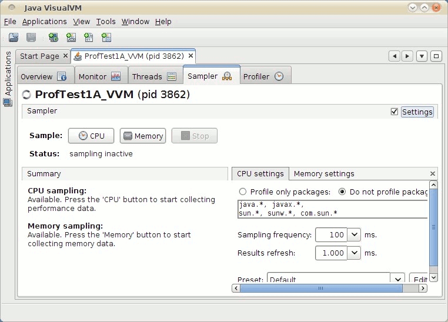
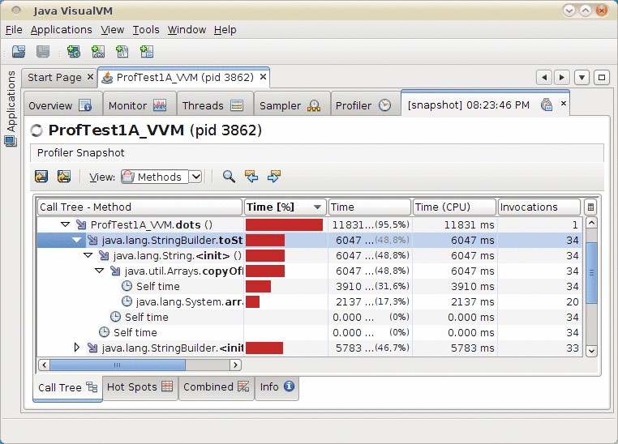
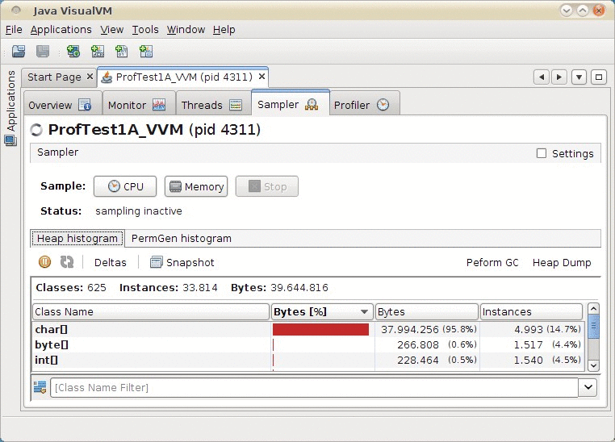
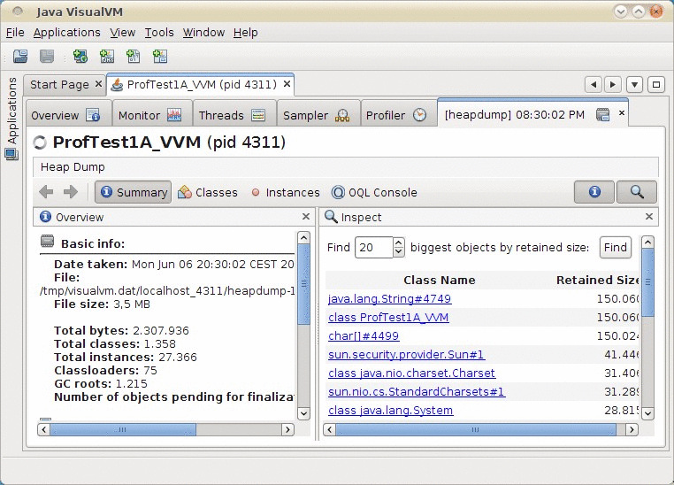
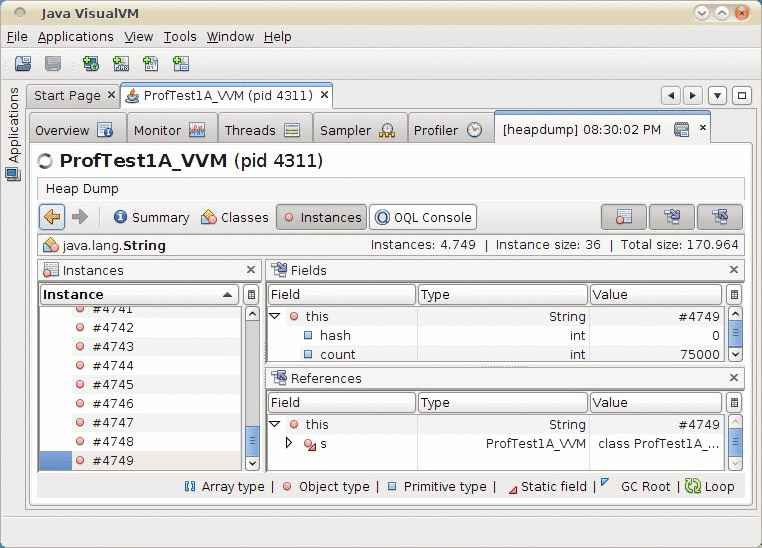

52.3 Einsatz eines Profilers
52.3.1 Grundlagen
Die bisher vorgestellten Tipps und Tricks sind sicherlich eine Hilfe,
um bereits während der Entwicklung eines Programms grundsätzliche
Performance-Probleme zu vermeiden. Läuft das fertige Programm
dann trotzdem nicht mit der gewünschten Geschwindigkeit (was
in der Praxis durchaus vorkommt), helfen pauschale Hinweise leider
nicht weiter. Stattdessen gilt es herauszufinden, welche Teile des
Programms für dessen schlechte Performance verantwortlich sind.
Bei größeren Programmen, die aus vielen tausend Zeilen
Quellcode bestehen, ist das eine komplizierte Aufgabe, die nur mit
Hilfe eines guten Profilers bewältigt
werden kann. Der Profiler ist ein Werkzeug, mit dessen Hilfe im laufenden
Programm Performance-Parameter, wie beispielsweise die verbrauchte
CPU-Zeit, die Anzahl der allozierten Objekte oder die Anzahl der Aufrufe
bestimmter Methoden, überwacht und gemessen werden können.
Durch manuelle Inspektion der erzeugten Logdateien oder mit Hilfe
eines Auswertungsprogramms kann dann festgestellt werden, welche Teile
des Programms die größte Last erzeugen und daher verbesserungsbedürftig
sind.
Das Standard-JDK enthält bereits seit der Version 1.0 den eingebauten
hprof-Profiler, der Informationen über
Laufzeit und Aufrufhäufigkeit von Methoden geben kann. Im JDK
1.2 wurde er erweitert und kann seither den Speicherverbrauch messen
und Profiling-Informationen threadweise ausgeben.
Im Vergleich zu spezialisierten Produkten sind die Fähigkeiten
des eingebauten Profilers etwas rudimentär. Insbesondere die
vom Profiler erzeugte Ausgabedatei erfordert einigen Nachbearbeitungsaufwand.
Zudem gibt es keine grafischen Auswertungen wie bei kommerziellen
Profilern. Dennoch ist der JDK-Profiler ein brauchbares und hilfreiches
Instrument, mit dem Performance-Probleme und Speicherengpässe
analysiert werden können. Seit der Version 6 liegt dem JDK mit
dem aus der Netbeans-IDE bekannten Visual VM
ein zweiter Profiler bei, der im Gegensatz zu hprof
eine moderne grafische Oberfläche besitzt. Wir wollen uns in
diesem Abschnitt sowohl mit hprof
als auch mit Visual VM vertraut machen.
Als Beispiel für die Anwendung der Profiler wollen wir ein Programm
verwenden, dessen simple Aufgabe darin besteht, einen String
mit 75000 Punkten zu erzeugen und auf dem Bildschirm auszugeben. Statt
die Ratschläge aus dem vorigen Abschnitt zu beherzigen, verwendet
das Programm den Operator +=,
um den String
Zeichen für Zeichen in einer Schleife zusammenzusetzen.
001 /* ProfTest1A.java */
002
003 public class ProfTest1A
004 {
005 public static String dots(int len)
006 {
007 String ret = "";
008 for (int i = 0; i < len; ++i) {
009 ret += ".";
010 }
011 return ret;
012 }
013
014 public static void main(String[] args)
015 {
016 String s = dots(75000);
017 System.out.println(s);
018 }
019 }
|
ProfTest1A.java |
Listing 52.12: Ein Beispielprogramm zum Testen des Profilers
Nachfolgend wollen wir uns eine Beispielsitzung jeweils mit dem hprof-Profiler
und mit Visual VM ansehen. Ähnlich wie bei einem Debugger besteht
die typische Vorgehensweise darin, schrittweise Informationen über
Rechenzeit- und Speicherverbrauch zu gewinnen und das Programm auf
Basis dieser Informationen nach und nach zu optimieren. Für gewöhnlich
gibt es dabei kein Patentrezept, das direkt zum Erfolg führt,
sondern der Umgang mit dem Profiler ähnelt eher einer Detektivarbeit,
bei der die einzelnen Teile der Lösung nach und nach gefunden
werden.
52.3.2 Eine Beispielsitzung mit dem hprof-Profiler
Erzeugen der Profiling-Informationen
Zunächst muss das Programm wie gewöhnlich übersetzt
werden:
javac ProfTest1A.java
Um das Programm unter Kontrolle des Profilers zu starten, ist die
Option -Xrunhprof
zu verwenden und nach einem Doppelpunkt mit den erforderlichen Parametrisierungen
zu versehen. Die Parameter werden als kommaseparierte Liste von Argumenten
der Form »Name=Wert« angegeben. Die wichtigsten Parameter
von hprof
sind:
| Name |
Mögliche Werte |
| cpu |
samples, times, old |
| heap |
dump, sites, all |
| file |
Name der Ausgabedatei |
| depth |
Maximale Tiefe der Stacktraces |
Tabelle 52.3: Parameter von hprof
Mit der Option cpu wird der
CPU-Profiler aktiviert. Er kennt die Modi »samples«, »times«
und »old«. Im Modus »samples« werden die Profiling-Informationen
dadurch gewonnen, dass das laufende Programm mit Hilfe eines separaten
Threads regelmäßig unterbrochen wird. Bei jeder Unterbrechung
wird ein Stacktrace gezogen, der dem Profiler Auskunft darüber
gibt, welche Methode gerade ausgeführt wird, in welcher Quelltextzeile
das Programm steht und wie die Kette ihrer Aufrufer aussieht. Jeder
derartige Schnappschuss wird als Sample bezeichnet.
Die unterschiedlichen Stacktraces werden mit einem Aufrufzähler
versehen, der immer dann um 1 erhöht wird, wenn bei einer Unterbrechung
ein entsprechender Stacktrace gefunden wird. Aus dem Endwert der Zähler
kann dann abgeleitet werden, wo das Programm die meiste Rechenzeit
verbraucht hat. Denn je höher der Zähler war, desto öfter
wurde das Programm an der zugehörigen Programmstelle »angetroffen«
und desto wahrscheinlicher ist es, dass dort nennenswert Rechenzeit
verbraucht wird.
Der zweite Modus »times« arbeitet etwas anders. Statt lediglich
die Anzahl der Stacktraces zu zählen, misst er tatsächlich
die innerhalb der einzelnen Methoden verbrauchte Rechenzeit. Allerdings
wird dadurch auch die Laufzeit des Programms stärker erhöht
als im Modus »samples«. In der Praxis kann eine gemischte
Vorgehensweise sinnvoll sein, bei der zunächst per »samples«
die größten Performance-Fresser gesucht werden und dann
per »times« das Feintuning vorgenommen wird.
Bei der Verwendung des CPU-Profilers sind weiterhin die Optionen file
und depth von Bedeutung. Mit
file kann der Name der Ausgabedatei
angegeben werden, er ist standardmäßig java.hprof.txt.
Mit depth wird festgelegt, mit
welcher maximalen Tiefe die Stacktraces aufgezeichnet werden (standardmäßig
4). Ist die Aufrufkette einer Methode länger als der angegebene
Wert, wird der Stacktrace abgeschnitten und bei der Analyse ist nicht
mehr bis ins letzte Detail erkennbar, von welcher Stelle aus der Aufruf
erfolgte. Wird depth auf 1 gesetzt,
sind nur noch die Aufrufstellen sichtbar, die Aufrufer selbst bleiben
unsichtbar.
Wir wollen einen ersten Lauf mit dem CPU-Profiler im Modus »samples«
und mit einer maximalen Stacktiefe von 10 machen und rufen das Programm
daher wie folgt auf:
java -Xint -Xrunhprof:cpu=samples,depth=10 ProfTest1A
Das CPU-Profile
Das Programm erzeugt nun die Ausgabedatei java.hprof.txt
mit den Profiling-Informationen. Sie besteht aus drei Teilen:
- Im oberen Teil werden allgemeine Informationen zur Struktur der
Datei und den darin verwendeten Einträgen gegeben.
- Im mittleren Teil befinden sich die Stacktraces.
- Im unteren Teil werden die Sampling-Ergebnisse ausgegeben.
Die Analyse beginnt im unteren Teil. Er sieht bei unserer Beispielsitzung
wie folgt aus (die Samples ab Position 11 wurden aus Gründen
der Übersichtlichkeit entfernt):
CPU SAMPLES BEGIN (total = 1187) Mon May 30 20:41:17 2011
rank self accum count trace method
1 32,94% 32,94% 391 300026 java.lang.AbstractStringBuilder.<init>
2 32,01% 64,95% 380 300025 java.util.Arrays.copyOfRange
3 16,76% 81,72% 199 300030 java.lang.System.arraycopy
4 16,43% 98,15% 195 300031 java.lang.System.arraycopy
5 1,10% 99,24% 13 300029 java.lang.System.arraycopy
6 0,08% 99,33% 1 300012 sun.net.www.URLConnection.<init>
7 0,08% 99,41% 1 300032 java.lang.Object.<init>
8 0,08% 99,49% 1 300033 java.lang.StringBuilder.toString
9 0,08% 99,58% 1 300034 ProfTest1A.dots
10 0,08% 99,66% 1 300035 java.lang.AbstractStringBuilder.<init>
11 ...
Die Ausgabe ist nach Aufrufhäufigkeit geordnet. Von den insgesamt
1187 Samples, die während des Programmlaufs gezogen wurden, waren
391 im Konstruktor der Klasse AbstractStringBuilder
und 380 in der Methode copyOfRange
der Klasse Arrays.
Noch einmal 407 Aufrufe entfielen auf arraycopy
der Klasse System.
Insgesamt waren diese Methoden für 99,24 Prozent der Gesamtlaufzeit
verantwortlich.
Da die auffälligen Methoden nicht selbst geschrieben sind und
sich damit direkten Optimierungsversuchen entziehen, kann eine Performance-Verbesserung
lediglich dadurch erreicht werden, dass die Anzahl ihrer Aufrufe vermindert
wird. Dazu müssen wir die Methoden-Aufrufer herausfinden und
uns die in der fünfte Spalte angegebenen Stacktraces ansehen.
Der Stacktrace zu AbstractStringBuilder
hat beispielsweise die Nummer 300026 und sieht so aus:
TRACE 300026:
java.lang.AbstractStringBuilder.<init>(AbstractStringBuilder.java:45)
java.lang.StringBuilder.<init>(StringBuilder.java:92)
ProfTest1A.dots(ProfTest1A.java:9)
ProfTest1A.main(ProfTest1A.java:16)
Er besagt, dass der Sample in Zeile 45 des Konstruktors der Klasse
AbstractStringBuilder erzeugt
wurde. Diese wurde vom Konstruktor der Klasse StringBuilder
aufgerufen, das von unserer eigenen Methode dots
in Zeile 9 aufgerufen wurde. In Zeile 9 steht zwar kein Aufruf von
append,
dort befindet sich aber der +=-Operator
zur Verkettung der Strings. Dieser wird vom Compiler in entsprechende
Methoden- und Konstruktorenaufrufe der Klassen String
und StringBuilder
übersetzt (siehe Listing 52.2).
Als erste Erkenntnis stellen wir also fest, dass offensichtlich der
+=-Operator zur String-Verkettung
interne StringBuilder-Objekte
erzeugt, die einen erheblichen Teil der CPU-Zeit benötigen, um
während des Anfügens von Zeichen vergrößert zu
werden.
Die Stacktraces 300025 und 300030 der nächsten beiden Kandidaten
verstärken den Eindruck, dass der +=-Operator
in unserem Programm CPU-intensiven Code erzeugt:
TRACE 300025:
java.util.Arrays.copyOfRange(Arrays.java:3209)
java.lang.String.<init>(String.java:215)
java.lang.StringBuilder.toString(StringBuilder.java:430)
ProfTest1A.dots(ProfTest1A.java:9)
ProfTest1A.main(ProfTest1A.java:16)
TRACE 300030:
java.lang.System.arraycopy(System.java:Unknown line)
java.lang.String.getChars(String.java:854)
java.lang.AbstractStringBuilder.append(AbstractStringBuilder.java:391)
java.lang.StringBuilder.append(StringBuilder.java:119)
java.lang.StringBuilder.<init>(StringBuilder.java:93)
ProfTest1A.dots(ProfTest1A.java:9)
ProfTest1A.main(ProfTest1A.java:16)
Beide Arten von Samples gehen letztlich auf Zeile 9 unseres Programms
zurück und zeigen Rechenzeitverbräuche, die durch die vom
+=-Operator ausgelöste
Verarbeitung temporärer Strings und StringBuilder verursacht
werden.
Unsere erste Vermutung hat sich also bestätigt: Der harmlos aussehende
Aufruf des +=-Operators in Zeile
9 unseres Programms erzeugt temporäre String-
und StringBuilder-Objekte,
in der ein Großteil der Rechenzeit durch das Anhängen und
Kopieren von Zeichen und das Erhöhen der Kapazität verbraucht
wird.
Das Heap-Profile
Einen noch deutlicheren Eindruck vermittelt ein Heap-Profile. Wir
erstellen es, indem wir das Programm mit der Option heap=sites
erneut unter Profiler-Kontrolle laufen lassen:
java -Xint -Xrunhprof:heap=sites,depth=10 ProfTest1A
Die Ausgabe besteht wie beim CPU-Profiling aus drei Teilen. Die ersten
beiden entsprechen dem CPU-Profiler, der dritte enthält Informationen
zur dynamischen Heap-Belegung:
SITES BEGIN (ordered by live bytes) Tue May 31 19:37:14 2011
percent live alloc'ed stack class
rank self accum bytes objs bytes objs trace name
1 49,88% 49,88% 44774568 299 1333782704 75000 300316 char[]
2 49,80% 99,68% 44699728 299 1331532704 75000 300318 char[]
3 0,01% 99,69% 9696 303 2400000 75000 300317 java.lang.String
SITES END
Auch hier geben die erste Spalte die Rangordnung und die nächsten
beiden die einzelnen und kumulierten Prozentanteile am Gesamtverbrauch
an. Die Spalten 4 und 5 geben einen Überblick über die aktiven
Objekte, die nächsten beiden über die insgesamt allozierten
Objekte (jeweils mit der Gesamtzahl allozierter Bytes und der Anzahl
der Objekte). Die letzte Spalte stellt den Datentyp des Objekts dar.
Am auffälligsten ist die oberste Zeile und die darin ersichtliche
Diskrepanz zwischen aktiven und allozierten Objekten. Dort steht,
dass unser Programm 75000 Zeichen-Arrays mit insgesamt 1,3 GByte Speicher
alloziert hat, davon aber nur noch 299 Objekte mit kaum 44 MByte Speicher
aktiv sind. Hier wurden also in erheblichem Umfang kurzlebige Objekte
erzeugt und anschließend wieder fallengelassen. Stacktrace 300316
sieht so aus:
TRACE 300316:
java.lang.AbstractStringBuilder.<init>(AbstractStringBuilder.java:45)
java.lang.StringBuilder.<init>(StringBuilder.java:92)
ProfTest1A.dots(ProfTest1A.java:9)
ProfTest1A.main(ProfTest1A.java:16)
Wieder liegt der Verursacher in Zeile 9 unseres Programms und wir
sehen, dass der +=-Operator
nicht nur viel Rechenzeit verbraucht, sondern zudem eine große
Anzahl temporärer Objekte erzeugt und damit das Laufzeitsystem
und den Garbage Collector belastet.
Die optimierte Version des Programms
Da wir auf die Implementierung von String
und StringBuilder
keinen Einfluss haben, es dort also für uns nichts zu optimieren
gibt, müssen wir die Verwendung des +=-Operators
einschränken oder eine besser geeignete Alternative suchen. Aus
Abschnitt 52.2.1 wissen wir
bereits, dass es besser ist, direkt mit StringBuilder-Objekten
zu arbeiten, und eine verbesserte Version unseres Programms sieht
dann so aus:
001 /* ProfTest1B.java */
002
003 public class ProfTest1B
004 {
005 public static String dots(int len)
006 {
007 StringBuilder sb = new StringBuilder(len + 10);
008 for (int i = 0; i < len; ++i) {
009 sb.append('.');
010 }
011 return sb.toString();
012 }
013
014 public static void main(String[] args)
015 {
016 String s = dots(10000);
017 System.out.println(s);
018 }
019 }
|
ProfTest1B.java |
Listing 52.13: Das verbesserte Programm nach der Profiler-Sitzung
Wird nun ein CPU-Profiling durchgeführt, ergibt sich ein gänzlich
anderes Bild:
CPU SAMPLES BEGIN (total = 10) Tue May 31 19:49:51 2011
rank self accum count trace method
1 30,00% 30,00% 3 300009 java.io.FileInputStream.readBytes
2 20,00% 50,00% 2 300027 java.lang.AbstractStringBuilder.append
3 10,00% 60,00% 1 300005 java.security.AccessController.doPrivileged
4 10,00% 70,00% 1 300011 sun.net.www.protocol.file.Handler.create-
FileURLConnection
5 10,00% 80,00% 1 300022 java.security.ProtectionDomain.<clinit>
6 10,00% 90,00% 1 300026 ProfTest1B.dots
7 10,00% 100,00% 1 300028 java.lang.AbstractStringBuilder.append
CPU SAMPLES END
Statt 1187 gab es nur noch 10 Samples (denn die Laufzeit des Programms
hat sich drastisch reduziert) und nur noch ein einziger von ihnen
wurde durch den Aufruf der Methode dots
verursacht. Der Heap-Profiler liefert ein ähnliches Bild: Der
gesamte Speicherverbrauch des Programms liegt nun in der Größenordnung
von 150 kByte und es gibt keine nennenswerten temporären Objektallokationen
mehr. Diese Version des Programms erzielt das gleiche Ergebnis also
erheblich ressourcenschonender als die vorige.
52.3.3 Eine Beispielsitzung mit Visual VM
Visual VM ist ein Profiler mit grafischer
Oberfläche, der seit Version 6 Update 7 zusammen mit dem JDK
ausgeliefert wird. Das Programm jvisualvm.exe
findet sich im bin-Verzeichnis der JDK-Installation
und lässt sich von dort aus starten.
Die Vorgehensweise ist etwas anders als bei hprof.
Während der Profiler bei hprof
in der VM des Programmes selbst mitläuft, wird Visual VM als
eigenständiges Programm gestartet, das sich mit dem laufenden
Java-Programm verbindet, das auf der gleichen Maschine oder auf anderen
Rechnern im Netzwerk laufen kann. Nach dem Start von Visual VM erscheint
folgendes Fenster:

Abbildung 52.1: Visual VM
Der Bildschirm ist in zwei Bereiche geteilt. Links finden Sie unter
»Local« und »Remote« eine Liste aller lokalen
bzw. im Netzwerk laufenden Java-Programme. Unter anderem sieht man
dort auch Visual VM selbst, denn auch dieses läuft als Java-Programm
innerhalb einer JVM. Wenn man ein Java-Programm startet, erscheint
es mit einer kurzen Verzögerung in der Liste; endet es, verschwindet
es wieder aus der Auflistung.
Meist ist diese Architektur hilfreich, weil man vorab keine Vorkehrungen
treffen muss, um ein Java-Programm zu profilen, sondern spontan in
ein beliebiges Java-Programm »hineinschauen« kann. In unserem
Fall ist das jedoch nicht so einfach, denn unser Testprogramm läuft
nur wenige Augenblicke. Wir erweitern unser Listing daher so, dass
vor und nach dem kritischen Abschnitt auf eine Tasteneingabe gewartet
wird (siehe Zeile 025
und Zeile 028 in
folgendem Listing).
Visual VM bietet einige Funktionen, um Speicherlöcher auszumachen,
also Referenzen auf verwaiste oder sehr große Objektgeflechte,
die unnötig Speicher blockieren. Weniger gut eignet sich Visual
VM dagegen für die Suche nach Stellen, an denen Speicher verschwendet
wird, d.h. an denen viele temporäre, kurzlebige Objekte erzeugt
werden - etwa wie in unserem obigen Beispielprogramm. Wir schreiben
unser Listing daher so um, dass wir ein »Speicherloch« simulieren,
indem wir unser Ergebnis in einer statischen Variablen speichern (siehe
Zeile 006). Anschließend
werden wir versuchen, diese Stelle mit Visual VM zu finden.
001 /* ProfTest1A_VVM.java */
002 import java.io.*;
003
004 public class ProfTest1A_VVM
005 {
006 private static String s;
007
008 public static String dots(int len)
009 {
010 String ret = "";
011 for (int i = 0; i < len; ++i) {
012 ret += ".";
013 }
014 return ret;
015 }
016
017 private static void enter() throws IOException
018 {
019 System.out.println("Bitte Enter drücken");
020 while (System.in.read() != '\n');
021 }
022
023 public static void main(String[] args) throws IOException
024 {
025 enter();
026 s = dots(75000);
027 System.out.println(s);
028 enter();
029 }
030 }
|
ProfTest1A_VVM.java |
Listing 52.14: Ein Beispielprogramm zum Testen von Visual VM
Das CPU-Profile
Zunächst übersetzen wir das Listing mit
javac ProfTest1A_VVM.java
und starten es mit
java -Xint ProfTest1A_VVM
Jetzt drücken wir noch nicht [ENTER],
sondern wechseln zunächst zu Visual VM. In der Liste der Programme
erscheint unter anderem auch ProfTest1A_VVM,
mit dem wir uns per Doppelklick verbinden. Auf der rechten Seite erscheint
ein neues Bild und auf dem Overview-Reiter sehen wir allgemeine
Informationen zum laufenden Prozess.
Für das CPU-Profile sind zwei weitere Reiter auf der rechten
Seite des Fensters von Interesse: Sampler und Profiler.
Im Prinzip handelt es sich um zwei verschiedene Profiler, die sich
durch die Methoden unterscheiden, mit denen die Daten gewonnen werden.
Wir verwenden den Sampler, der ähnlich wie der hprof-Profiler
in regelmäßigen Abständen Threaddumps zieht, also
Stichproben nimmt.

Abbildung 52.2: Sampler-Reiter in Visual VM
Wir haken nun die Checkbox Settings an und tragen in der dann
erscheinenden Textarea Do not profile packages Folgendes ein:
java.io.*, java.lang.reflect.*, java.net.*, javax.*,
sun.*, sunw.*, com.sun.*, java.security.*, java.util.*,
java.lang.Thread
Drücken Sie den CPU-Button, um den Profiling-Vorgang zu
beginnen, und wechseln Sie anschließend in Ihre Anwendung. Drücken
Sie [ENTER], um den aufwändigen
Programmteil zu durchlaufen. Klicken Sie auf den Stop-Button,
sobald das Testprogramm Sie erneut zum Drücken der [ENTER]-Taste
auffordert, um den Profiling-Vorgang zu beenden. Achten Sie darauf,
dass das Testprogramm weiterhin läuft, denn viele Informationen
und Optionen stehen nur so lange zur Verfügung, wie der Prozess
am Leben ist. Das Ergebnis sollte etwa so aussehen:

Abbildung 52.3: CPU-Profiling-Ergebnis in Visual VM
Vielleicht wundern Sie sich, dass die Methode dots
nicht als Hotspot in der Liste auftaucht. Das liegt daran, dass die
Liste absteigend nach Selftime, also Nettolaufzeit, sortiert
ist. Die Methode dots selbst
benötigt aber annähernd keine Zeit, sondern nur die von
ihr aufgerufenen Methoden. Ihre Nettolaufzeit liegt also nahe 0 msek.
Für eine tiefergehende Analyse drücken wir den Snapshot-Button,
um die bislang gesammelten Daten in einem neuen Reiter zusammenzufassen.
In dieser Ansicht kann man sich die Verteilung der Laufzeit in einer
Baumdarstellung ansehen:

Abbildung 52.4: CPU-Snapshot in Visual VM
In der ersten Spalte sehen wir den Methodennamen. Die zweite und dritte
Spalte stellt die Bruttolaufzeiten dar, und zwar grafisch,
in absoluten Zeiten und anteilig. Die letzte Spalte zeigt die gezählte
Anzahl von Aufrufen, die deutlich geringer als die tatsächliche
Anzahl ist (es handelt sich ja um eine Stichprobe). Im Vergleich zu
hprof arbeitet der Sampler leider
nicht mit Zeilen-, sondern nur mit Methodengenauigkeit.
Wir erkennen, dass innerhalb der Methode dots
aufwändige Stringoperationen stattfinden, die einen großen
Anteil der Laufzeit ausmachen. Das Ergebnis haben wir erwartet, wir
kennen es schon aus der Sitzung mit dem hprof-Profiler.
Das Heap-Profile
Um mit Visual VM ein Heap-Profile zu erzeugen, geht man ähnlich
vor. Zunächst starten wir das Programm mit
java -Xint ProfTest1A_VVM
Nun wechseln wir zu Visual VM und gehen wie oben beschrieben in die
Sampler-Ansicht. Anschließend drücken wir den Memory-Button
und danach [ENTER] in unserem
Testprogramm. Wenn das Programm fertig ist, drücken wir Stop
und sehen uns das Ergebnis an:

Abbildung 52.5: Heap-Profiling-Ergebnis in Visual VM
Wir können auf einen Blick erkennen, dass sehr viele char-Array-Objekte
erzeugt wurden, die insgesamt viel Speicherplatz verbraucht haben,
insbesondere in Relation zur Länge des Ergebnis-Strings von 75.000
Zeichen. Leider kann mit Visual VM nicht die Codestelle zurückverfolgt
werden, die diesen »Datenmüll« erzeugt hat. Wir konzentrieren
uns also auf die Suche nach Speicherlöchern und erzeugen einen
Heap-Dump, indem wir auf den gleichnamigen Button drücken. Wenn
wir nun auf Summary klicken, sehen wir am rechten Bildschirmrand
einen Find-Button, mit dem die größten Objekte im
Hauptspeicher gesucht werden können (siehe Abbildung 52.6).
Diese Aktion erzeugt eine Auflistung, die absteigend nach Objektgröße
sortiert ist. Die linke Spalte enthält den Typ des Objekts und
rechts sieht man seine Größe in Bytes. Ganz oben in der
Liste erscheint unser gesuchter String. Man sieht, dass die Klasse
ProfTest1A_VVM die gleiche Größe
besitzt und auch ein char-Array
auf Platz drei annähernd die gleiche Größe aufweist.
Die Erklärung ist einfach: Eine statische Variable der Klasse
ProfTest1A_VVM referenziert
den String von Platz 1 (unser »Speicherloch«). Die Größe
eines Objekts setzt sich rekursiv aus der Größe seiner
referenzierten Objekte zusammen.

Abbildung 52.6: Verfolgung der größten Objekte in Visual
VM
Wenn man auf den Link des String-Objekts klickt, gelangt man in eine
Ansicht, in der nähere Informationen zu dem String angezeigt
werden, insbesondere auch die Rückwärtsreferenzen zu diesem
Objekt:

Abbildung 52.7: Referenzen verfolgen in Visual VM
In dieser Instance-View sehen wir links eine Auflistung aller
Objekte des aktuell gewählten Typs; vorausgewählt ist der
String, über den wir eingestiegen sind. Rechts oben sehen wir
die Membervariablen des Objekts, die sich genauer inspizieren lassen.
Rechts unten sehen wir den Stacktrace aller Referenzen auf dieses
Objekt, den für uns interessantesten Teil des Fensters. Wir erkennen
in Abbildung 52.7, dass
die Klasse ProfTest1A_VVM über
die statische Variable s eine
Referenz auf den langen String hält.
52.3.4 Ausblick
Egal, ob mit dem eingebauten Profiler das Laufzeitverhalten oder der
Speicherverbrauch der Anwendung untersucht werden soll, die prinzipielle
Vorgehensweise ist stets gleich:
- Zunächst wird das Programm gestartet, dabei werden Profiling-Informationen
gesammelt.
- Die größten Rechenzeit- und Speicherverbraucher werden
ermittelt und über ihre Stacktraces wird bestimmt, woher sie
aufgerufen werden und in welcher Weise sie zum Programmergebnis beitragen.
- Stehen genügend Erkenntnisse zur Verfügung, kann das
Programm verbessert werden und mit einem neuen Profiler-Lauf geprüft
werden.
- Sind die Ergebnisse zufriedenstellend, kann der Profiler deaktiviert
werden, andernfalls beginnt das Spiel von vorne.
Ist der Anteil von lokalem Code am Rechenzeitverbrauch hoch, kann
versucht werden, diesen zu verringern. Typische Ansatzpunkte dafür
sind das Vermindern der Anzahl von Schleifendurchläufen (durch
bessere Algorithmen), die Verwendung von Ganz- statt Fließkommazahlen,
das Herausziehen von schleifeninvariantem Code, das Vermeiden der
Doppelauswertung von gemeinsamen Teilausdrücken, das Wiederverwenden
bekannter Teilergebnisse, die Verwendung alternativer Datenstrukturen,
das Eliminieren von unbenutztem Code oder das Reduzieren der Stärke
von Ausdrücken, indem sie durch algebraisch gleichwertige, aber
schnellere Ausdrücke ersetzt werden. Wird ein großer Anteil
der Rechenzeit dagegen in Aufrufen von Untermethoden verbraucht, kann
versucht werden, deren Aufrufhäufigkeit zu vermindern, sie durch
performantere Aufrufe zu ersetzen oder - im Falle eigener Methoden
- ihre Ablaufgeschwindigkeit zu erhöhen.
Der zielgerichtete Einsatz dieser Techniken erfordert gute Werkzeuge,
insbesondere einen guten Profiler. Bei kleineren Problemen mag es
ausreichend sein, die Ablaufgeschwindigkeit mit Ausgabeanweisungen
und System.currentTimeMillis
zu ermitteln, bei größeren Problemen sollte man hprof
oder Visual VM verwenden. Daneben gibt es einige kommerzielle Produkte,
wie etwa JProbe (http://www.quest.com/jprobe/),
der auch für Teile der Software zu diesem Buch verwendet wurde,
oder JProfiler (http://www.ej-technologies.com/products/jprofiler/overview.html).
Zu ihren Fähigkeiten zählen beispielsweise:
- Die grafische Darstellung der Aufrufhierarchie mit Laufzeitinformationen
zu Methoden und Aufrufen
- Das Ermitteln von Profiling-Informationen bis auf die Ebene einzelner
Quelltextzeilen hinab
- Das Erstellen dynamischer Profile, um die Veränderung wichtiger
Parameter bereits während des laufenden Programms beobachten
zu können
- Die Rückverfolgung von alloziertem Speicher sowohl zu den
Programmstellen, die den Speicher belegt haben, als auch zu den Variablen,
in denen die zugehörigen Objekte gehalten werden
- Das Vergleichen von Profiling-Läufen, um die Auswirkungen
von Optimierungsversuchen studieren zu können
- Die Ausgabe von Reports und HTML-Dateien zu Vergleichs- und Dokumentationszwecken
Vor einigen Jahren waren das Alleinstellungsmerkmale kommerzieller
Produkte, heute bietet bereits das normale JDK mit Visual VM viele
dieser Features.